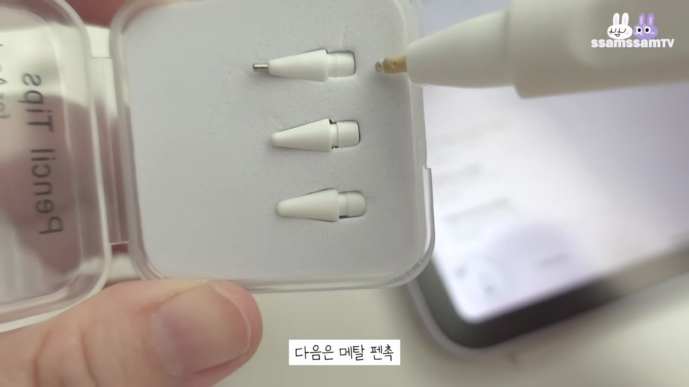

이번 블로그 포스트에서는 양념과 조리 비법에 대한 흥미로운 내용을 다룹니다. 영상의 자막을 분석하여, 여러 가지 맛의 비결과 고유한 조리법을 살펴보겠습니다.
환영 인사
- Pho Min이 등장하다
- 일give一点
영상의 시작 부분에서 Pho Min이 등장하며, 다양한 조리법과 양념에 대한 이야기를 시작합니다.
플레이스테이션과 요리의 연결
- Storm 귀신에 대한 언급
- 100mWh 소개
플레이스테이션과 같은 흥미로운 요소들을 통해 요리에 대한 새로운 접근법을 이야기합니다.
양념의 대명사 - 소금
- 소금의 다양성
- 양념으로서의 역할
소금이 요리에 사용되는 방식과 그 중요성을 강조하며 다양한 양념을 소개합니다.
고춧가루와 다른 양념들
- 다양한 양념들의 조화
- 볶음 요리의 비법
고춧가루와 함께 사용하는 여러 양념들이 요리의 맛을 어떻게 향상시킬 수 있는지를 설명합니다.
싱싱한 재료에 대한 중요성
- 싱싱한 맛의 완성
- 자연적인 재료 사용
신선한 재료의 사용이 요리의 맛을 어떻게 결정짓는지를 논의합니다.
다양한 조리법의 세계
- 국물 요리의 기술
- 변화하는 조리 방식
국물 요리를 포함한 다양한 조리법들이 어떻게 발전해왔는지를 탐구합니다.

조리법의 마법
- 영양소를 극대화하는 방법
- 몸에 좋은 조리법
조리법을 통해 얻을 수 있는 영양소와 건강에 대한 장점을 강조하며 마무리합니다.
Tags: #양념 #조리법 #소금 #고춧가루 #신선한 재료 #국물 요리 #영양소 #맛